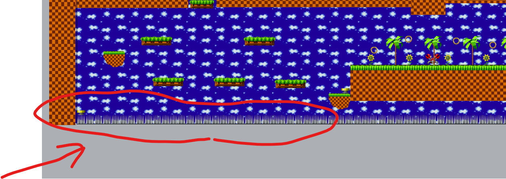

Еще задания
Самый нижний уровень (платформа) с шипами
Сделай сплошные шипы на самом нижнем уровне в твоей игре.
Мигание при уроне
Можно использовать экшен (action) Flash - тогда Игрок будет мигать какое-то время.
Для этого нужно предварительно создать (подключить) поведение Flash у Cоника (Игрока).